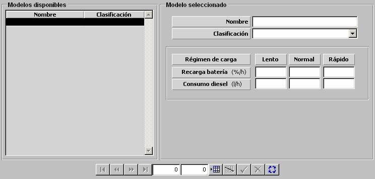

Recarga de Batería de Submarinos

Los modelos de Recarga de Batería de Submarinos se parametrizan mediante una tabla en la que se introducen los valores de Recarga de Batería y Consumo de Diesel asociado según el régimen de carga seleccionado por el submarino (Lento, Normal o Rápido):
Descripción de los parámetros:
Recarga Batería: Tanto por ciento de batería recargado por el submarino cada hora, según el régimen de recarga seleccionado.
Unidades: % / hora
Rango: 0 - 99.99
Ejemplo:
Si Recarga Batería = 0 ⇒ no recarga batería.
Si Recarga Batería = 99.99 ⇒ recarga batería inmediatamente.
Consumo Diesel: Cantidad de combustible consumido por el submarino cada hora, según el régimen de recarga seleccionado.
Unidades: litros / hora
Rango: 0 - 9999.9
Ejemplo:
Si Consumo Diesel = 0 ⇒ no consume diesel.
Si Consumo Diesel = 9999.9 ⇒ consumo máximo.